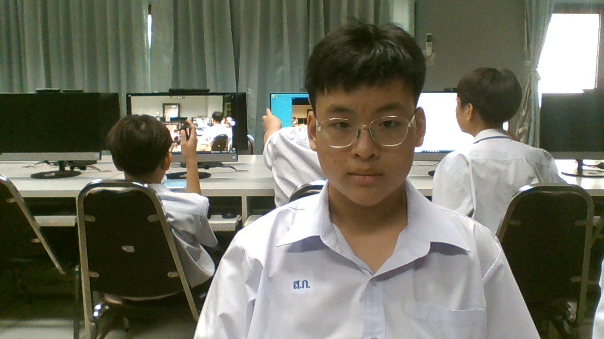

ครูในความทรงจำ.....ที่ไม่ลืมเลือน 2568
น.ส.สุนิสา เพ็งสุข : ขอบคุณครับที่สอนสังคมครับ
บทเพลงที่มอบให้ครู
น.ส.ธัญวรินทร์ ฟั่นคุ้ม
บทเพลงที่มอบให้ครู

จัดทำโดย : เด็กชายวรธวีร์ สมิตะเศรษฐ์ 213 เลขที่40